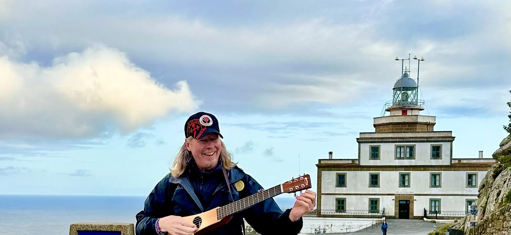
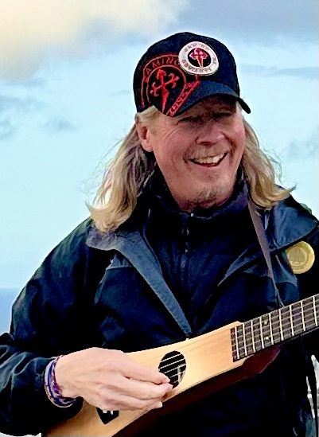
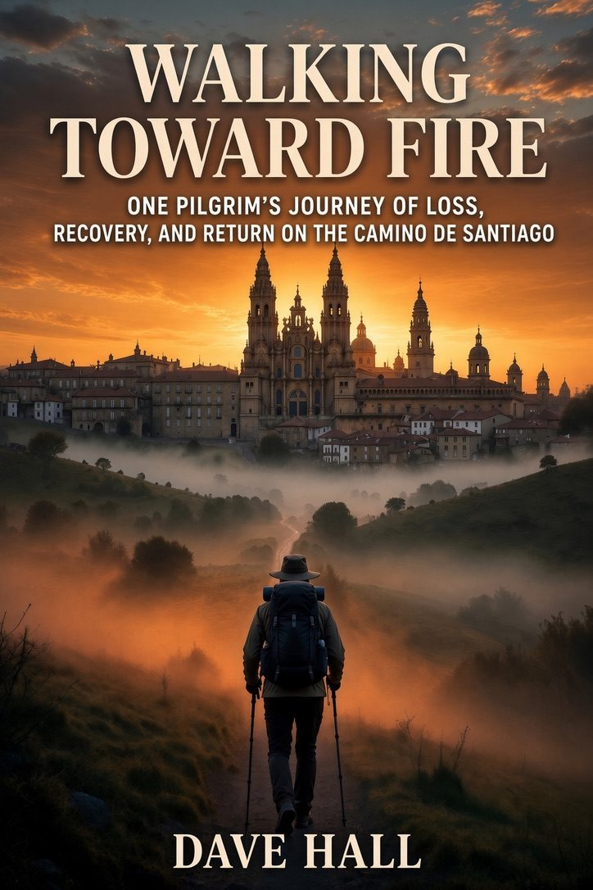
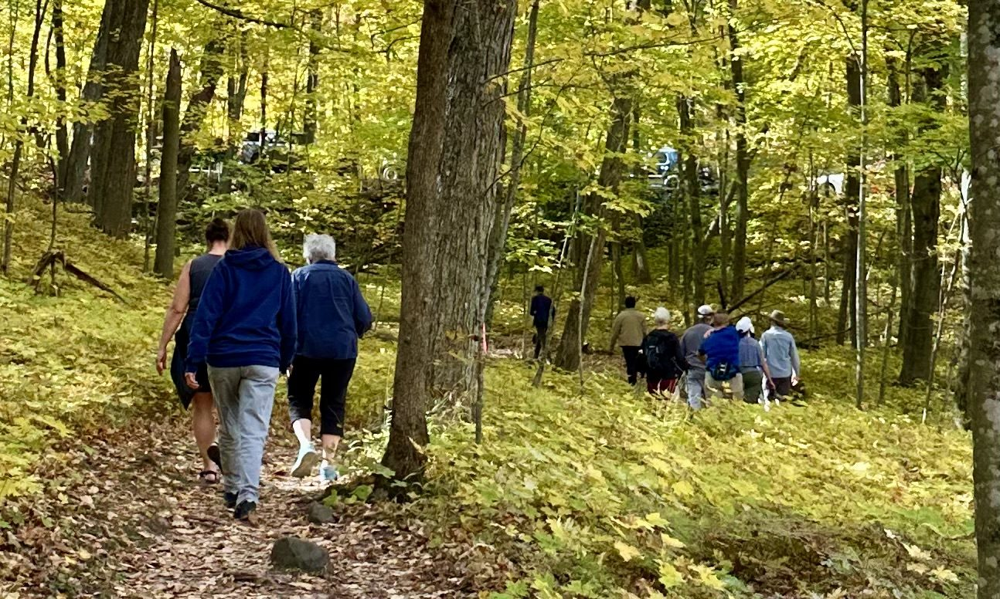
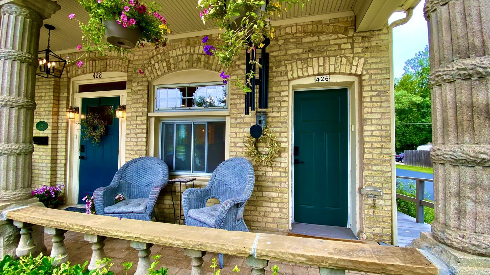

Dave Hall, Camino Coach
Milwaukee, Wisconsin
Walking alongside a million people on pilgrimage to wholeness.
I walked the Camino and it changed how I grieve, how I recover, and how I live. Now I help others find that same path, wherever they're starting from.
Five paths, one pilgrimage

Buen Camino
I'm Dave Hall.
Camino life coach, author, pilgrim, and a guy from Milwaukee who found out the hard way that the road has something to teach us if we're willing to walk it.
Camino del Norte in 2019. The Portuguese Coastal route in 2023. In May 2024, León to Santiago with a guitar on my back, writing songs with pilgrims along the way. Somewhere in there the walk stopped being a trip and became a way of living.
This site is the hub for everything I'm building. Pick the path that's calling you. I'll meet you on the road.

The five paths
One pilgrimage. Pick the path that's calling you.
The Book
Walking Toward Fire. My story of grief, recovery, and discovering the Camino life.
ReadThe Coaching
CaminoLife. Wilgrim cohorts and an app that walks with you through all three chapters.
Walk with usThe Retreats
12 Steps on the Camino. A nine-day recovery pilgrimage on the Wisconsin Way.
See the nine daysThe Newsletter
Notes from the road, straight to your inbox. Free, and honest.
SubscribeThe Stay
Home Port. A place to rest in Port Washington, four blocks from Lake Michigan.
Book a stay

The Book
Walking Toward Fire
Every step of the walk, written down.
This is the book I felt God told me to write.
Walking Toward Fire is the honest story of what the Camino taught me about grief, recovery, and what it means to live a Camino life. Not just for 500 miles across Spain, but every ordinary Tuesday at home.
It's not a guidebook. It's one pilgrim's story, told straight, in the hope that it helps you tell yours.
- Dave's first book. Coming late 2026.
- Read the prologue now, and get the first chapter when it's ready.
The Coaching
Walk your own Camino, with company.
Your Camino, with a guide beside you.
CaminoLife is where pilgrim coaching meets everyday life. It's for people who sense there's a path for them, maybe a real walk across Spain, maybe a season they're trying to get through, and who would rather not walk it alone.
Small groups of first-time pilgrims, we call them Wilgrims, prepare together before the walk: mental, awareness, physical, spiritual. And the CaminoLife app walks with you through all three chapters, the Dream, the Pilgrimage, and the Homecoming.
- The CaminoLife app opens Spring 2027. The waitlist is open now.
- Wilgrim cohorts: a few Tuesday evenings, a small group, before you ever lace your boots.

The Wisconsin WayThe Retreats
12 Steps on the Camino
Some griefs can't be talked through. They have to be walked through.
A 12 Step-inspired pilgrimage for grief and addiction recovery. There's a kind of healing that only happens when you put your boots on the actual ground, and do the honest work side by side with a small group.
Nine days on the Wisconsin Way, from the Champion Shrine to Holy Hill Basilica. Five walking days, about 56 miles, all Twelve Steps in order on the road.
- April 16 to 24, 2027.
- Eleven pilgrims, led by Dave Hall.
- You don't buy a seat. You apply.
The Newsletter
Notes from the road
Straight from a pilgrim's notebook to your inbox.
This is where I write most often: short, honest notes from a life that's still being walked.
Some letters are about the Camino. Some are about grief, or recovery, or what I'm learning as I build CaminoLife and finish Walking Toward Fire. Some are just a Tuesday thought I couldn't keep to myself.
No spam, no salesy nonsense. Just a pilgrim writing to other pilgrims.
Free. Unsubscribe anytime. The road keeps going either way.
Port Washington, WisconsinThe Stay
Rest before you walk again.
Every pilgrim needs a home port.
Even pilgrims need somewhere to lay their pack down.
Home Port Vacation Escapes is our 1865 Cream City brick home in Port Washington, Wisconsin, four blocks from Lake Michigan. Take the whole house, or either side on its own. Bring the family. Bring the dog.
It's not a retreat center and it's not coaching. It's a good place to rest, reset, and breathe before the next stretch of the road, run by people who understand that rest is part of the walk.

Ultreia
Because the Camino isn't a trip. It's a way of living.
Pick the path that's calling you. I'll meet you on the road.